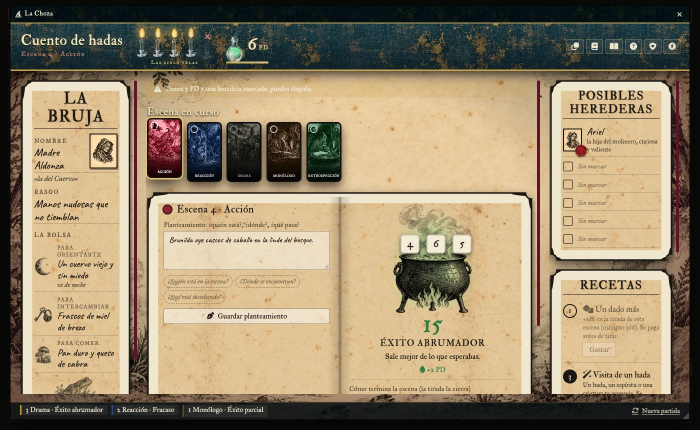
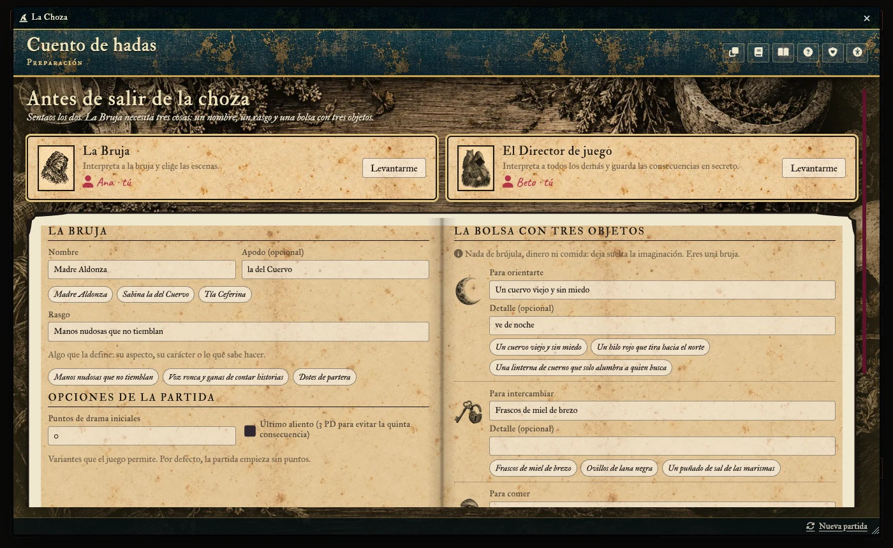
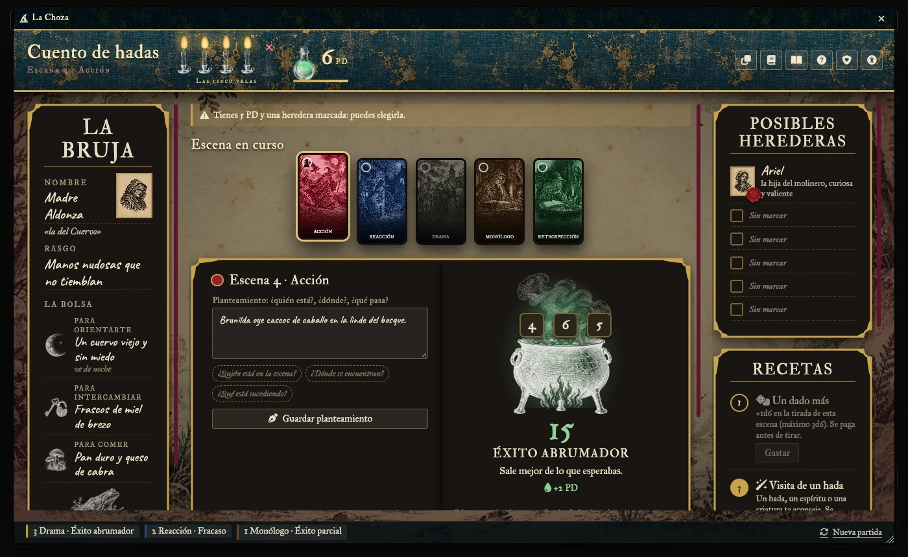
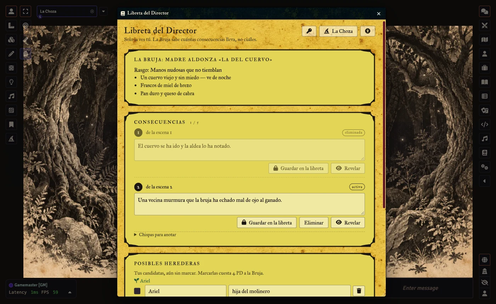
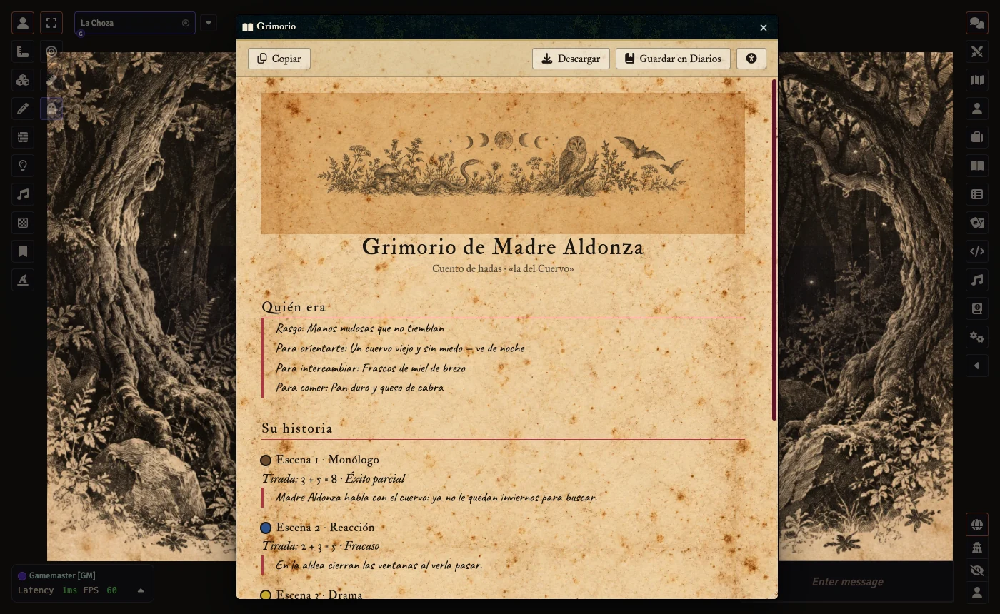

Una bruja, una heredera
La Bruja se despide del mundo y necesita a alguien que se haga cargo de su choza. Un Director de juego interpreta a todos los demás. Se juegan escenas de cinco tipos, se tira en el caldero y cada fracaso apaga una vela. Con las cinco apagadas, muere sin heredera.
Qué incluye
- La Choza: mesa con la hoja de la Bruja, el libro de la escena, herederas y recetas de puntos de drama.
- Cinco cartas de escena con grabados originales y el peón que se desliza a la elegida; no se repite tipo salvo descansando.
- Consecuencias secretas de verdad: la Libreta del Director va cifrada; la Bruja solo ve cuántas velas quedan.
- Grimorio autogenerado con toda la historia: se copia, se descarga o se guarda en Diarios.
- Modo oscuro, lectura, alto contraste, texto y botones grandes, movimiento reducido, volúmenes por usuario.
- Líneas y velos, Tarjeta X anónima, sonido sintetizado, español e inglés.
- En solitario o a dos.




Instalación
En Foundry, Sistemas → Instalar sistema, y pega:
https://github.com/ManuRomera/mr-bruja/releases/latest/download/system.json
Créditos y avisos
Bruja es un juego de jim pinto (Post World Games), en su edición castellana de El Refugio de Ryhope. Este sistema es de Manu Romera, no es oficial y necesita el libro: no incluye su texto ni sus ilustraciones; el arte es original.
Si te gusta el juego, cómpralo y apoya a sus autores.